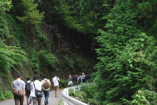
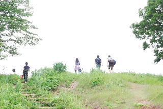
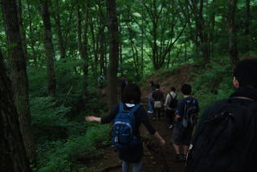

「6/28日、陣馬山ハイキング」
アシスタントの武です。先生に代わって、陣馬山ハイキングについてお知らせします。
----
来たる６月２８日、ハイキングを予定しております。
場所は陣馬山（高尾山のそばにある山）を予定して
ます。標高は８５７ｍ。途中までバスで行って、そのあと
約1時間歩いて山頂へ。
天気がイイ日は、山頂から富士山が見えるらしい
ですよ♪
（当初は藤尾駅集合の予定でしたが、高尾駅集合に
なりました。ご注意ください。）

詳 細
日時 2008/6/28（土）
行き先 陣馬山（googlemap）
雨天時 ハイキング中止で飲み会！
予算 1,000～1,500円程度？
集合場所 JR 高尾駅改札
集合時間 午前10:30
東京駅からのアクセス（Google トランジット）
新宿駅からのアクセス（Google トランジット）
横浜駅からのアクセス（Google トランジット）

飲み物
水分補給のための飲み物は各自ご持参ください

料 理
前回のお花見同様、誰か作ってきてください♪
服 装
動きやすい格好 （そんなに気合入った登山衣装は必要なさそうです。）
持ち物は一応雨具のご準備を!!
参加資格
2年以内に講座に出席、又はOne Day セミナーに出席したことがある方キャンセル待ちの方、またはそのお友達、ご家族
参加方法